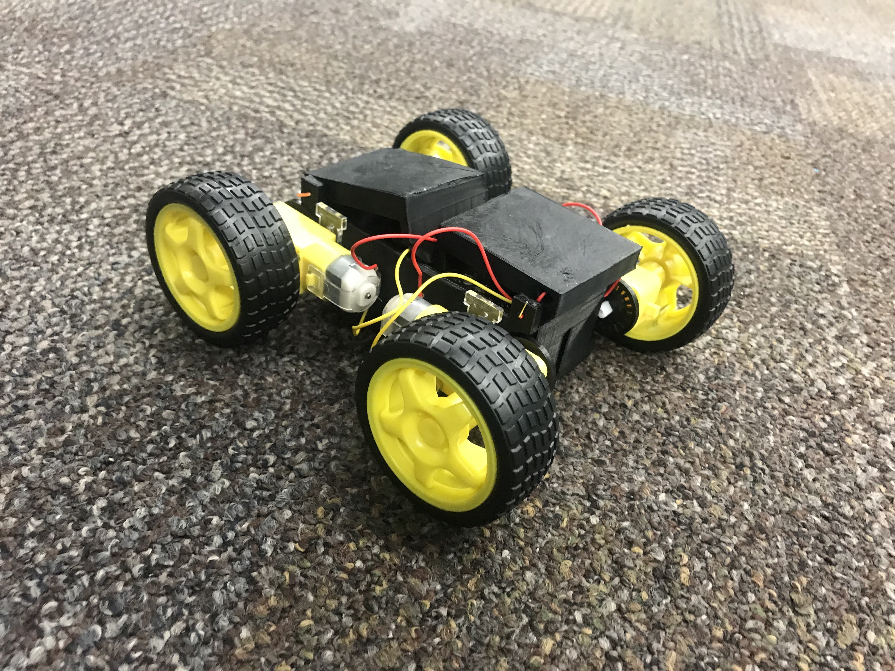
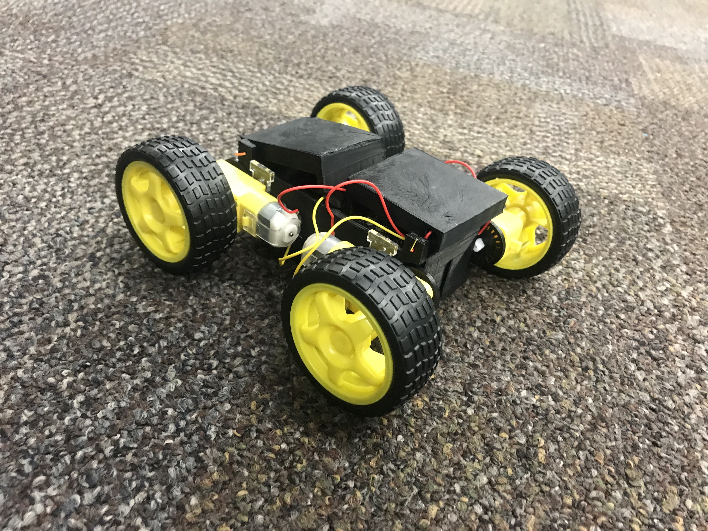
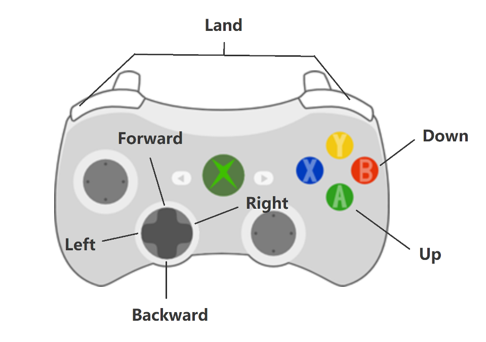
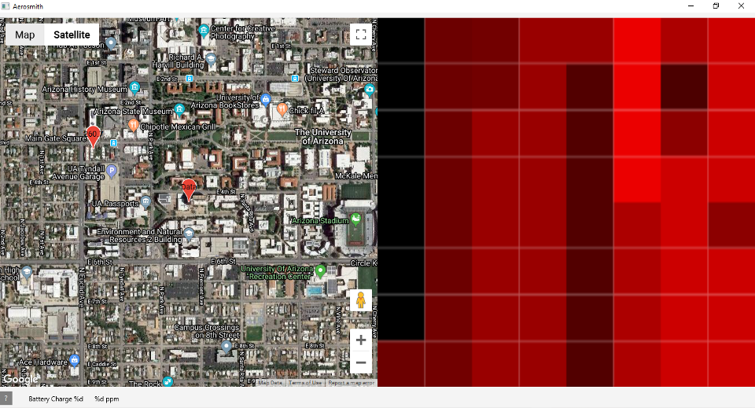

The Sonic Adventure 3 system has two unique set up, the Sonic and Tails modes. These names are inspired by the mode of transport each mode uses, with Tails being a drone mounted system and Sonic a land rover.
Designed for a multitude of terrains, the SA3 uses an innovative bluetooth pinging system, combined with temperature and CO2 sensors to find survivors trapped in rubble following natural disasters.
In todays connected world, many have a bluetooth enabled device on them at all times. This can be used in conjunction with new innovations in finding survivors such as detecting human presence in the air, as well as more traditional methods, like person-sniffing dogs.


Pictured above is the SA3 in Tails configuration
The difference between the Tails and Sonic configurations is not only the difference between the method of propolsion, but also that Tails has a thermal sensor attatched.
Sonic does not have this function simply because it is too close to the rubble for this to be usable data.
The following is a picture of the Tails mode in action
 

Pictured above is the SA3 in Sonic configuration
This is the ground version of the Sonic Adventures 3 project
Pictured above are the controls for the SA3 in Tails mode.
The controlls for the Sonic mode are the same, just without the up and down, as it only moves horizontally, not vertically.
The following image is from the GUI, showing the user interaction with the system
